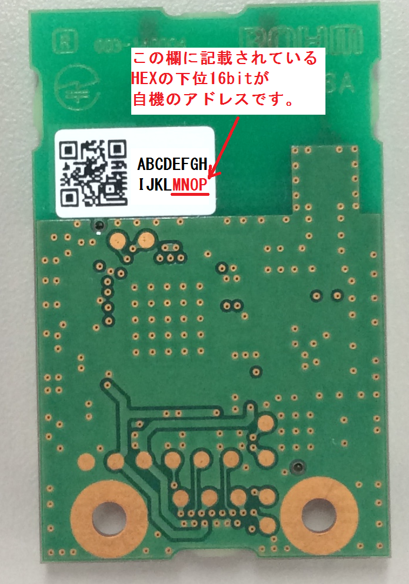

SUBGHZ_MSG SubGHz.send(uint16_t panid, uint16_t dstAddr, uint8_t *data, uint16_t len, void (*callback)(uint8_t rssi, uint8_t status));
データを送信するための関数です。
使用する周波数を設定します。
送信先PANIDを指定します。自機と異なるPANIDを設定するとACKを受け取ることができなくなるので注意してください。
送信先アドレスを指定します。
送信先アドレスはSubGHzモジュールに記載されているアドレスの下位16bitを使用します。
（BP3596モジュールに貼ってあるシールのMNOPの位置に記載されている値が使用するアドレスです。実際は実際にはABCD..ではなく合計64bitの固有のアドレスがHEX表記されています。)

送信パワーを設定します。
| 設定値 | 送信パワー |
| SUBGHZ_PWR_20MW | 20mW |
| SUBGHZ_PWR_1MW | 1mW |
受信完了時のcallback関数を指定します。
通常はNULLで使用してください。
| 戻り値 | 意味 |
| SUBGHZ_OK | 正常に終了 |
| SUBGHZ_RESET_FAIL | リセット失敗 |
| SUBGHZ_SETUP_FAIL | 内部 セットアップ関数の失敗 |
| SUBGHZ_SLEEP_FAIL | 内部 スリープ関数の失敗 |
| SUBGHZ_WAKEUP_FAIL | 内部 wakeup関数の失敗 |
| SUBGHZ_MYADDR_FAIL | 内部 アドレス取得関数の失敗 |
| SUBGHZ_SETFIL_FAIL | 内部 アドレスフィルタ設定関数の失敗 |
| SUBGHZ_TX_COMP_FAIL | 送信CALLBACKの失敗 |
| SUBGHZ_TX_FAIL | 送信失敗 |
| SUBGHZ_TX_ACK_FAIL | 送信後のACK受信失敗 |
| SUBGHZ_RX_ENB_FAIL | 受信ENB関数の失敗 |
| SUBGHZ_RX_DIS_FAIL | 受信Disable関数の失敗 |
| SUBGHZ_RX_COMP_FAIL | 受信callback関数の失敗 |
| SUBGHZ_PANID | PANIDエラー |
| SUBGHZ_ERR_ADDRTYPE | ADDRESSエラー |
サンプルプログラムのWelcome_SubGHzで使用しています。
3秒に1回、send_dataに格納された"Welcome to Lazurite Sub-GHz\r\n"を送信し、送信処理中にLEDをONしています。
LEDは、26番の端子に接続されている青色LEDを使用しています。
SubGHzの周波数はCH=36を使用し、自機並びに送信先のPANIDを0xABCDに、送信先のアドレスは0x079Dとなっています。